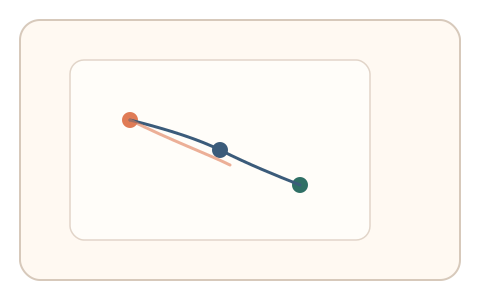

#115
Morphological Analysis - Combination Batches
已扩展
路径回忆复刻
用户完成导航后异步要求快速复刻操作路径，以路径相似度与反应时验证真实性。
概念原文
用户完成界面导航后异步要求快速复刻刚才的操作路径，系统比较路径相似度与反应时。任务结构为异步验证，信号形态为搜索路径与反应时。
以“意图记忆”替代一次性任务。
研究背景
真实用户对刚完成的路径具有短时记忆，复刻路径会呈现自然的简化与偏差。脚本难以在跨时上下文中保持一致的意图轨迹。
核心机制
- 记录用户完成任务时的操作路径。
- 异步提示用户快速复刻路径。
- 计算路径相似度与反应时。
- 与群体分布比对判定。
用户流程
- 步骤 1：用户完成导航任务，系统记录路径。
- 步骤 2：异步提示复刻路径。
- 步骤 3：系统比较相似度与反应时。
判定信号
路径相似度
真实用户能复刻大致路径但会有自然误差。
反应时与停顿
记忆复刻存在合理的启动与停顿节奏。
判定逻辑
相似度与反应时需落在人类分布区间；过度精确或随机判异常。
对抗面
- 脚本直接重放原路径
- 伪造固定路径模板
防御与缓解
- 随机化复刻入口与路径分辨率
- 引入轻微扰动降低重放价值
- 叠加轨迹微抖动与停顿信号
可达性与风险
提供简化路径复刻或替代任务，避免对记忆障碍用户造成压力。
- 异步弹窗可能打断体验
- 用户未记清路径导致误判
可视化状态

状态 1：路径记录
记录用户完成任务路径。

状态 2：路径复刻
用户快速复刻路径。

状态 3：相似判定
比较路径相似度与反应时。
参考资料
Procedural memory
说明路径复刻与动作记忆基础。
Spatial memory
说明路径记忆与复刻误差。